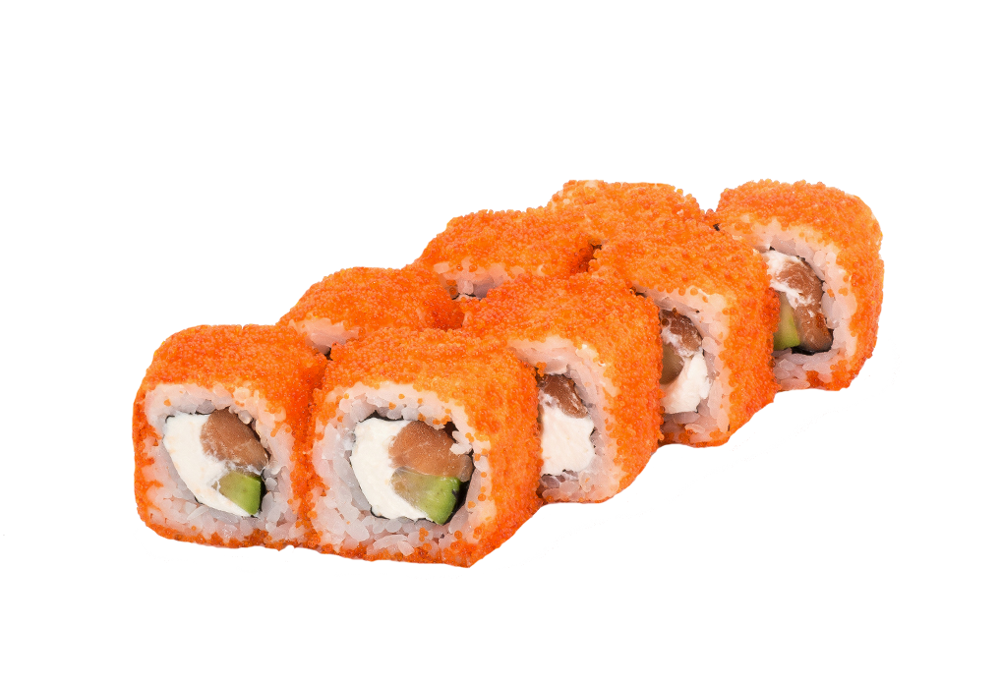

Суши: вкусные Суши!!!
Блюдо традиционной японской кухни, приготовленное из риса с уксусной приправой и различных морепродуктов, а также других ингредиентов.

С начала 1980-х годов суши получило широкую популярность на Западе и во всём мире.
«Характеристики товара»
японский рис;
аказу – красный уксус, который производят из продуктов ферментации при приготовлении сакэ;
рисовый уксус;
рыбные продукты;
соевый соус – шою или сёю;
маринованный имбирь;
васаби;
листы нори (водорослей) для маков.
«Подробное описание товара»
Роллы (яп. 巻き寿司 макидзуси, они же маки) — одна из разновидностей суши в японской кухне, отличительной особенностью которой является скручивание при помощи бамбуковой циновки (яп. 巻簾 — макису) в цилиндрическую форму, с последующим разрезанием на дольки.ы
Филодельфия
Разновидность суши, обычно сделанные из копченого лосося, сливочного сыра и огурца

С начала 1980-х годов суши получило широкую популярность на Западе и во всём мире.
«Характеристики товара»
Пищевая ценность на 100 г
Энерг. ценность164 ккал
Белки9.7 г
Жиры8.2 г
Углеводы12.2 г
Калифорния
Разновидность суши, приготовляемая вывернутым рисом наружу (типичный вариант урамаки).
Считается, что ролл «Калифорния» был создан в 1973 году Итиро Маситой, шеф-поваром ресторана Tokyo Kaikan в Лос-Анджелесе.
«Характеристики товара»
Пищевая ценность на 100 г
Энерг. ценность 164 ккал
Белки 9.7 г
Жиры 8.2 г
Углеводы 12.2 г
«Подробное описание товара»
Крабовые палочки
150 г
Икра тобико
50 г
Авокадо
50 г
Огурцы
1 штука
Сливочный сыр
30 г
Рис
320 г
Сухие водоросли нори
1 штука
Унаги
Самые популярные роллы, состоящие из риса, угря и водорослей нори.

Гурманы считают, что это блюдо настоящее гастрономическое наслаждение.
«Характеристики товара»
Калории, ккал: 173
Белки, г: 5.3
Жиры, г: 8.3
Углеводы, г: 19.2
«Подробное описание товара»
Рис для суши
80 г
Копченый угорь
30 г
Огурцы
10 г
Сухие водоросли нори
½ штуки
Маринованный имбирь
по вкусу
Соевый соус
по вкусу
Васаби
по вкусу
Лимон
1 штука
«Все права защищены»©